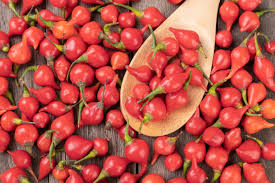

Extrato da Pimenta ‘Biquinho’ como revestimento comestível na conservação de goiabas
Pertencente à espécie Capsicum chinense, a pimenta ‘Biquinho’ se diferencia das demais devido a características como formato, cor e ausência de pungência. Atualmente o seu uso é limitado basicamente na ornamentação de pratos, sendo deixado de lado os inúmeros benefícios existentes. O trabalho teve como objetivo elaborar um revestimento comestível com diferentes concentrações de extrato da pimenta ‘Biquinho’ para auxiliar na conservação de goiabas. Os extratos foram obtidos seguindo o método de extração alcoólica, incorporados no revestimento comestível elaborado, os mesmos foram aplicados por imersão nas furtas para proceder as análises.Os frutos em que houve a aplicação do revestimento, apresentaram grande eficiência em sua conservação, principalmente sob ação de bolores e leveduras. Os resultados físico-químicos das goiabas foram satisfatórios, principalmente quanto aos teores de vitamina C, cuja aplicação do revestimento reduziu a degradação deste componente durante o período de análise. A comprovação efetiva da ação antifúngica do revestimento elaborado foi alcançada, assim como esperada em estudo prévios, podendo ser aplicada em goiabas e tendo retardamento no processo de senescência.
Também chamada pimenta de bico, ela pertence à mesma espécie das pimentas habanero, de-cheiro, bode, cumari-do-Pará e murupi. Todas essas pimentas são muito aromáticas e saborosas, mas o ardor pode ser bem suave (leve), como na biquinho ou muito picante (intenso) como na habanero.
Beneficios da Pimenta Biquinho
Além de seu sabor agradável, que faz com que ela seja usada em pratos doces e salgados, e até em drinks, a pimenta biquinho traz diversos benefícios para a saúde. Ela possui vitaminas C, B6 e K1, e é rica em cálcio, ferro, magnésio, fósforo e sódio, além do betacaroteno. Com essas propriedades, a pimenta-de-cheiro é considerada um bom antioxidante, ajuda o sistema imunológico, ajuda a controlar o açúcar no sangue, a prevenir inflamações e a diminuir dores musculares. A pimenta biquinho pode ser plantada em vasos, em jardins, em estufas e em plantações profissionais. Conheça algumas das características do plantio para que a pimenteira tenha boa produtividade.
ANÁLISE PRODUTIVA DE PIMENTA BIQUINHO SOB IRRIGAÇÃO E ADUBAÇÃO NITROGENADA
Atualmente, a pimenta é cultivada em todas as regiões brasileiras, possuindo diversas destinações, tanto in natura como processada. Objetivou-se com esse trabalho, estudar lâminas de água e doses de nitrogênio no solo sob irrigação por gotejamento. A pimenta do gênero Capsicum tem ótima aceitação no mercado, tornando-se boa alternativa para pequenos produtores, pois não necessita de grandes áreas para seu cultivo. O experimento foi realizado na área experimental da Universidade Federal de Mato Grosso, Campus Rondonópolis, em Latossolo Vermelho distrófico. O delineamento foi de blocos casualizados, com parcelas subdivididas. As parcelas consistiram de 5 lâminas de irrigação (40%, 60%, 80%, 100% e 120% de evapotranspiração da cultura (ETc)) e as sub-parcelas de 5 doses de nitrogênio (0, 60, 120, 180 e 240 kg ha-1 ), em arranjo fatorial 5x5, com 4 repetições, totalizando 100 unidades experimentais. As variáveis analisadas são indicadoras de produtividade, sendo elas: diâmetro e comprimento dos frutos, massa dos 10 primeiros frutos maduros, teor de sólidos solúveis (°Brix), massa fresca total de frutos maduros, número de frutos maduros e produtividade total. Obteve-se significância estatística para as doses de nitrogênio nas avaliações de massa fresca total de frutos maduros, número de frutos maduros e produtividade total. Já as avaliações de diâmetro e comprimento dos frutos, massa dos 10 primeiros frutos maduros e teor de sólidos solúveis (°Brix) não apresentaram significância para as lâminas de água e doses de nitrogênio. Para a massa fresca total de frutos e produtividade total, a dose de nitrogênio que proporcionou maior produção foi de 190 Kg ha-1 . Para o número de frutos maduros a dose ideal de nitrogênio foi de 139,13 Kg ha-1 .

PIMENTA BIQUINHO SUBMETIDA ADUBAÇÃO COM ESTERCO E URINA DE VACA
RESUMO
O plantio de pimenta biquinho pode ser considerado uma alternativa importante para a agricultura familiar, sobretudo em sistemas de produção orgânicos e ambientalmente sustentáveis. Entretanto, apesar do enorme potencial, são escassos os estudos sobre a fertilização com o uso de insumos orgânicos para a produção, principalmente na Micro-região do Brejo Paraibano. Desta forma, buscouse com o presente trabalho, pesquisar o efeito da adubação orgânica sobre a produção da pimenta biquinho. Em campo, foram cultivadas plantas, utilizando-se o seguinte delineamento experimental: blocos casualizados em esquema fatorial de 2 x 5, onde o primeiro fator correspondeu a duas formas de adubação orgânica (esterco caprino e esterco bovino) e o segundo correspondeu a cinco doses de urina de vaca nos seguintes percentuais de concentração: 0%; 1,5%; 3,0%; 4,5%; e 6%, com quatro repetições, totalizando quarenta parcelas. Os resultados demonstraram que altas concentrações de urina de vaca diminuíram a produção de frutos/planta e consequentemente tiveram efeito negativo sobre a produtividade/planta, em comparação com doses crescentes de esterco bovino e caprino, sendo recomendada menor concentração desse insumo orgânico na fertilização de pimenta biquinho em